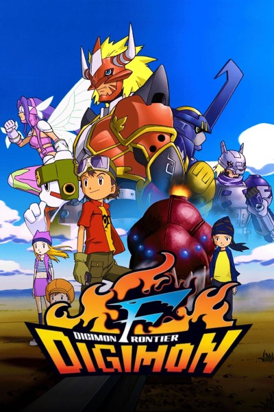

Frontera Digimon (Dejimon Furontia) es el cuarto Digimon Serie de televisión, primera emisión en 2002. Las noticias sobre esto llegaron por primera vez cuando Toei lo anunció oficialmente en diciembre de 2001, cuando se le otorgó el título tentativo Escáneres Digimon (esDejimon Sukyanázu) . Después de que se le solicite hacerlo por mensajes telefónicos inusuales, cinco niños ve a una estación de metro y toma un tren hasta el Mundo Digital. Allí, se encuentran Bokomon y Neemon, que actúan como sus guías y les dicen a los niños que el Mundo Digital está siendo destruido, y los niños deben luchar contra el mal Querubimán y sus siervos Guerreros Legendarios para salvar al mundo. La serie está disponible para ser transmitida en Hulu.
